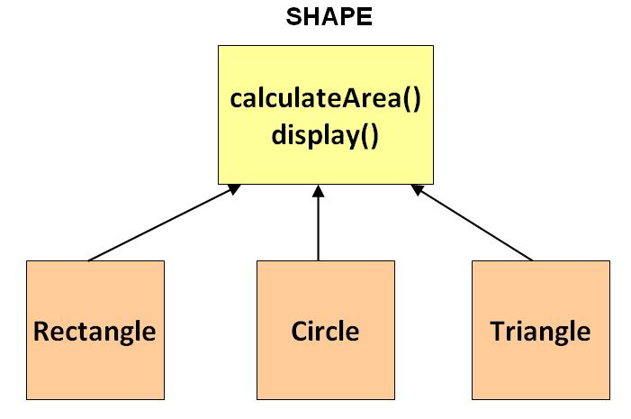

Abstract Base Class (abc)¶
Par Sylvain Renaud 1
Introduction¶
Les classes abstraites sont comme des classes standard, avec la particulatrité qu’on ne pourra pas créer d’objets de ces classes. Les classes abstraites doivent être spécifiées. Les classes qui spécifient les classes abstraites pourront elles être instanciées. Lors de la spécialisation, la classe dérivée aura toutes les méthodes de la classe mère (la classe abstraite). Ce mécanisme est utile pour généraliser un objet.
Exemple de classe abstraite : Shape (forme en français)
La classe abstraite Shape possède la méthode calculateArea().
Nous savons qu’une forme géométrique possède une aire.
Mais nous ne savons pas comment la calculer sans connaître la forme.
C’est pourquoi il est nécessaire de créer des classes qui dérivent de Shape.
Par exemple un rectange possède une aire calculable par hauteur*largeur.
Idem pour d’autres formes géométriques qui ont leurs propre manière de calculer leurs aires.
Nous pouvons par exemple créer des listes de Shape.
Dans ces listes il y aura des Shape Rectangle, Triangle, etc.
Si nous demandons à chaque élément de la liste de calculer son aire, il l’a calculera grâce à sa propre formule.
De plus, nous sommes certains que chaque élément de la liste possède la méthode calculateArea()
puisqu’il implémente Shape.
Exemples¶
Nous voulons donc pouvoir faire cela.
for shape in shapes:
print(shape.calculateArea())
Pour cela, il faut une classe abstraite Shape
class Shape(metaclass=abc.ABCMeta):
"""Shape est une classe abstraite."""
# Méthode abstraite car les formes ont différentes manière de calculer leur aire.
@abc.abstractmethod
def calculateArea():
"""Calcul l'aire. Méthode abstraite."""
Ensuite, on créé une classe Rectange qui implémente (hérite de) Shape.
class Rectangle(Shape):
"""Rectangle hérite de Shape."""
def __init__(self, hauteur, largeur):
"""Initialisation des attributs."""
self.hauteur = hauteur
self.largeur = largeur
def calculateArea(self):
"""Calcul l'aire d'un rectangle."""
return self.hauteur * self.largeur
Ici on impémente la méthode calculateArea() avec la méthode de calcul largeur * hauteur.
Si on oublie d’implémenter les méthodes abstraites dans une classe sensée implémenter une classe abstraite,
une erreur se produit : TypeError: Can't instantiate abstract class Rectangle with abstract methods calculateArea
En revanche on peut tout à fait, dans la classe abstraite implémenter complètement une méthode.
Les enfants hériteront alors de cette méthode sans devoir la redéfinir.
Il suffit de ne pas la marquer comme @abstractmethod.
Ensuite faisons une autre classe, Triangle, qui implémente Shape. Elle aura le même prototype que
Rectangle mais la méthode calculateArea() calculera l’aire différement.
class Triangle(Shape):
"""Triangle hérite de Shape."""
def __init__(self, hauteur, base):
"""Initialisation des attributs."""
self.hauteur = hauteur
self.base = base
def calculateArea(self):
"""Calcul l'aire d'un triangle."""
return self.hauteur * self.base / 2
Nous pouvons ensuite créer une liste de Rectangle et de Triangle puis calculer l’aire de chacun d’entre eux en une instruction, comme présenté avant.
Création d’une structure de données¶
Les classes abstraites peuvent également être utilisées pour créer sa propre structure de données.
En implémentant par exemple collections.abc.Sequence (une classe abstraite built-in de Python),
nous devrons redéfinir quelques méthodes qui permettront d’utiliser notre classe comme une liste.
Nous pouvons par des assertions vérifier les éléments de cette liste pour qu’ils soient tous du même type.
Prenons comme exemple une classe Garage qui contient une liste de Voiture.
"""Classe garage."""
from collections.abc import Sequence
from voiture import Voiture
class Garage(Sequence):
"""Classe iterable."""
def __init__(self, *voitures):
"""Constructeur."""
for v in voitures:
if isinstance(v, Voiture):
pass
else:
raise TypeError(f"{v!r} n'est pas une voiture.")
self.voitures = voitures
def __getitem__(self, index):
"""Trouve la voiture à l'index 'index'."""
return self.voitures[index]
def __len__(self):
"""Retourne le nombre de voitures."""
return len(self.voitures)
def afficher(self):
"""Affiche toutes les voitures du garage."""
for v in self.voitures:
v.afficher()
Lors de la création d’un garage, on vérifie que les éléments de la liste soient de type Voiture.
Si ce n’est pas le cas, on lève une erreur.
Par exemple cette ligne là lève l’erreur:
# Création des voitures.
v1 = Voiture('BMW', 'Noir')
v2 = Voiture('Subaru', 'Bleu')
v3 = Voiture('Dacia', 'Rouge')
# On place les voitures dans un garage ainsi qu'un nombre.
g = Garage(v1, v2, v3, 42)
# L'erreur 'La liste ne contient pas que des Voiture.' sera levée.
De même que l’exemple Shape, on aimerait afficher toutes les voitures d’un garage. Mais en appelant simplement
une méthode du garage:
>>> # Création des voitures.
>>> v1 = Voiture('BMW', 'Noir')
>>> v2 = Voiture('Subaru', 'Bleu')
>>> v3 = Voiture('Dacia', 'Rouge')
>>> # On place les voitures dans un garage.
>>> g = Garage(v1, v2, v3)
>>> # On affiche le garage (toutes les voitures qu'il contient)
>>> g.afficher()
BMW, Noir
Subaru, Bleu
Dacia, Rouge
La classe Garage implémente la classe abstraite collections.abc.Sequence. Tout comme les list.
On peut donc accéder à une voiture du garage par son index, obtenir le nombre de voiture du garage et d’autres
méthodes semblables à l’utilisation d’une list.
>>> g[0].afficher()
BMW, Noir
>>> len(g)
3
Conclusion¶
Les classes abstraite en python permettent de créer nos propres structures de données se
comportant comme les classes fournies (built-in).
Grâce aux instructions isinstance et issubclass nous pouvons vérifier directement le type d’une variable.
Cela permet, par exemple, de pouvoir utiliser la classe garage comme une liste.